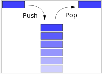
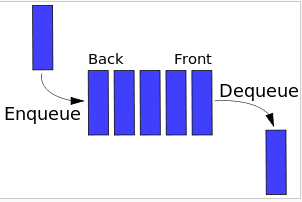

Types of Abstract Structures
Stack:
Abstract Data Structure based upon LIFO (Last-In-First-Out). We can think of the abstract Stack structure as a concrete stack of things. You can add to the top of the stack(push) and you can remove from the top of the stack(pop).

Queue:
Abstract Data Structure very similar to Stack, but based upon FIFO(First-In-First-Out). You can think of Queue as a Stack on its side.

Linked List:
Abstract Data Structure consisting groups of nodes which represent a sequence. At its core, nodes are composed of Data and a reference(link) to the next node in sequence. Nodes can be inserted or removed without changing the structure or position of the overall Linked List. The downside is that Linked List do not allow random access to data. It is sequential.
Set:
Abstract Data Structure that can store unique values in any order. Sets are typically used not for extracting specific information, but for testing membership within the Set.